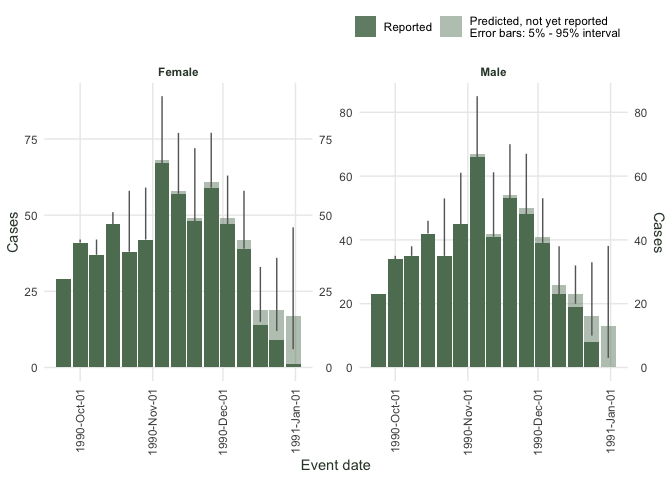
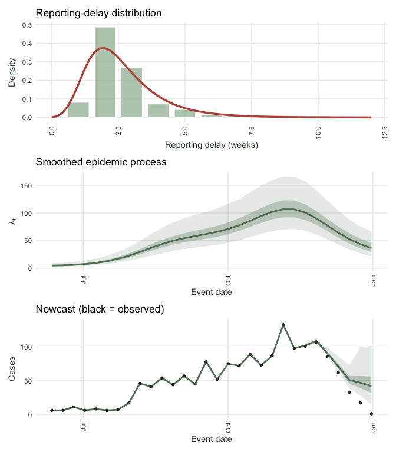

diseasenowcasting is an R package for nowcasting time series of epidemiological cases.
What is nowcasting?
Surveillance systems have a delay between the true date of an event (event_date, e.g. symptom onset or testing) and the report date for that event (report_date, e.g. when the case was entered into the database). Because recent event-dates are still missing reports that have not yet arrived, the latest case counts look artificially low. A nowcast corrects for this reporting delay and estimates the eventual, fully-observed totals.
To do this diseasenowcasting fits censored Bayesian models. The reporting delay is modeled directly as a stochastic process, jointly with the epidemic dynamics, through a censored likelihood. Inference runs on R’s Template Model Builder (RTMB), so no Stan/JAGS compilation is required. The package supports several epidemic processes, several delay families, stratified data, extreme value detection and backtesting.
⚠️
diseasenowcastingis currently under active development and parts of the interface might still change.
Why diseasenowcasting?
How diseasenowcasting compares with other R nowcasting packages:
| Feature | diseasenowcasting |
baselinenowcast |
NobBS |
nowcaster |
epinowcast |
|---|---|---|---|---|---|
| Automatic extreme-delay detection | ✅ | ❌ | ❌ | ❌ | ❌ |
| Automatic selection of best model | ✅ | ❌ | ❌ | ❌ | ❌ |
| Stratified data | ✅ | ✅ | ❌ | ✅§ | ✅ |
| Calendar / day-of-week effects | ✅ | ✅ | ❌ | ❌ | ✅ |
| Additional covariates | ✅ | ❌ | ❌ | ✅§ | ✅ |
| No per-model compilation | ✅ | ✅ | ✅ | ✅ | ❌ |
| Pure R — no external engine (Stan/JAGS) ‡ | ✅ | ✅ | ❌ | ✅ | ❌ |
| Arbitrary delay distributions † | ✅ | ❌ | ❌ | ❌ | ❌ |
| Arbitrary epidemic processes † | ✅ | ❌ | ❌ | ❌ | ❌ |
| Counts that can decrease (suspected cases later un-confirmed) | 🚧 | ✅ | ❌ | ❌ | ❌ |
| Nowcasts can be extended into forecasts or scenario-modeling | 🚧 | ❌ | ❌ | ❌ | ✅ |
| Effective reproductive number (Rₜ) | ❌ | ❌ | ❌ | ❌ | ✅ |
†Arbitrary means you supply your own custom R function: any distribution for the delay, any function f(t) for the epidemic process (not just a choice from a built-in menu). epinowcast is very flexible through parametric families and model formulas, but does not take arbitrary user-defined functions. ‡NobBS requires JAGS and epinowcast requires CmdStan (an external Stan toolchain); nowcaster runs entirely in R but depends on the (non-CRAN) INLA package. §nowcaster stratifies by age/region structure only, not arbitrary user-defined strata; diseasenowcasting allows any combination of strata columns. 🚧 In development for diseasenowcasting (counts that revise downward, e.g. a positive later re-classified as negative); baselinenowcast already supports this.
Installing
You can install diseasenowcasting (and its companion data package tbl.now) from GitHub with pak:
# install.packages("pak") # <- uncomment if you do not have `pak`
pak::pkg_install("RodrigoZepeda/tbl.now")
pak::pkg_install("RodrigoZepeda/diseasenowcasting")Example
diseasenowcasting works with data organised as a tbl_now object from the companion tbl.now package: a data frame annotated with the roles of its columns (event date, report date, and optionally the strata and the now date up to which everything is observed).
set.seed(6728)
library(diseasenowcasting)
library(tbl.now)
library(dplyr)
# Example surveillance data (dengue in Puerto Rico) shipped with tbl.now
data(denguedat)
#Simulate a nowcast on January 1st 1991
#Only cases and reports before that date will be used
dengue_data <- denguedat |>
filter(onset_week <= as.Date("1991-01-01") & report_week <= as.Date("1991-01-01"))We annotate the data with tbl_now(), pointing at the event and report dates (here the symptom-onset and report weeks) and the strata (gender):
dengue_tbl <- tbl_now(
dengue_data,
event_date = onset_week, # when symptoms started
report_date = report_week, # when the case was registered
strata = gender,
data_type = "linelist", # use "count-incidence" for pre-aggregated counts
now = as.Date("1991-01-01"),
t_effects = temporal_effects(seasons = 52) #Weekly seasonal effect (Fourier)
)Once the data is a tbl_now(), a single call to nowcast() does the rest (the nowcast is automatically stratified by the strata declared above):
ncast <- nowcast(dengue_tbl, n_draws = 1000)Results can be visualised with autoplot() (bars show the median, error bars the 90% credible interval) and extracted with predict() / summary():
autoplot(ncast)
Nowcast for the dengue example, by gender.
pred <- predict(ncast) # full posterior-predictive nowcast at every event-time
summary(pred)#> # A tibble: 6 × 16
#> mean median sd mad q2.5 q5 q10 q25 q50 q75 q90 q95 q97.5
#> <dbl> <dbl> <dbl> <dbl> <dbl> <dbl> <dbl> <dbl> <dbl> <dbl> <dbl> <dbl> <dbl>
#> 1 109. 108 1.53 1.48 107 107 107 107 108 109 110 111 112
#> 2 89.1 89 2.56 1.48 86 86 87 87 89 90 92 94 95
#> 3 68.2 67 4.79 2.97 63 63 64 65 67 70 73 75 78
#> 4 45.6 44 9.11 5.93 36 36 38 40 44 49 55 59 65.0
#> 5 41.6 39 15.8 11.9 23 24 27 32 39 47 59 68 74.0
#> 6 37.6 33 19.8 16.3 13 16 18 24 33 45.2 61 72.0 85.0
#> # ℹ 3 more variables: .event_num <int>, stratum <chr>, event_date <date>You can choose a different epidemic process, delay family or likelihood by passing a model() to nowcast():
model_1 <- model(
likelihood = nb_likelihood(), # negative binomial (recommended)
epidemic = ar1_epidemic(), # AR(1) process
delay = generalized_gamma_delay() # generalized gamma reporting delay
)
nowcast(dengue_tbl, model = model_1)And backtest and score to evaluate how different models would have performed in the past
model_2 <- model(
likelihood = nb_likelihood(), # negative binomial (recommended)
epidemic = hsgp_epidemic(), # recommended for long-running epidemics
delay = lognormal_delay() # generalized gamma reporting delay
)
#Set ndates to the number of dates you want for the backtest
bt <- backtest(dengue_tbl, list(model_1, model_2), n_dates = 3)And get the scores
autoplot(bt) You can access these quantities directly with
You can access these quantities directly with score
score(bt)
#> model wis overprediction underprediction dispersion
#> 1 HSGP/nb/LogNormal 11.05991 0 6.722222 4.337685
#> 2 AR1/nb/GeneralizedGamma 11.54056 0 8.203704 3.336852
#> coverage_50 coverage_90 ape mse n
#> 1 0 1 0.7115873 1139.417 3
#> 2 0 1 0.7336961 1290.000 3Automatic model selection
Not sure which model to pick? auto_nowcast() automates the compare-and-choose loop above: it builds a grid of candidate models sized to how much data you have, backtests them, and refits the single best one. The result is an ordinary nowcast, with the ranked comparison attached.
# Compares epidemic processes x delay families and keeps the best (default by WIS)
# here we use n_dates = 10 just as an example. Set to higher.
# In real life this number represents how many dates are used to compare
# the nowcasts
# Uncomment to run candidates in parallel:
# library(future)
# plan(multisession, workers = max(parallel::detectCores() - 1, 1))
auto_ncast <- auto_nowcast(dengue_tbl, n_dates = 10)
# plan(sequential)
# Get the chosen model
best_model_name(auto_ncast)
#> [1] "HSGP/nb/Dirichlet"
# Get the scores for all the models
comparison_scores(auto_ncast)
#> model wis overprediction underprediction dispersion
#> 1 HSGP/nb/Dirichlet 8.295708 0.06666667 5.147778 3.081264
#> 2 HSGP/nb/LogNormal 8.448542 0.06666667 5.220000 3.161875
#> 3 AR1/nb/Dirichlet 8.512125 0.06666667 5.819444 2.626014
#> 4 HSGP/nb/GeneralizedGamma 8.624472 0.06666667 5.330000 3.227806
#> 5 AR1/nb/LogNormal 8.916250 0.05555556 5.916111 2.944583
#> coverage_50 coverage_90 ape mse n
#> 1 0.3 0.9 0.7641435 676.1 10
#> 2 0.2 0.9 0.7904566 664.6 10
#> 3 0.0 0.8 0.7887334 650.7 10
#> 4 0.1 0.9 0.7989751 738.0 10
#> 5 0.1 0.8 0.7658455 714.1 10
#> [ reached 'max' / getOption("max.print") -- omitted 4 rows ]
autoplot(auto_ncast)
You can also feed it priors (sir = sir_epidemic(R0 = ...)), compare likelihoods (likelihood = list(nb_likelihood(), poisson_likelihood())), or add your own custom_delay() / custom_epidemic() models via models =. See the Introduction vignette for a more complete example.
Handling extreme delays
When new data arrives, update() re-scores every incoming report against the previously fitted delay distribution and warns about anything that seems implausibly delayed. The flagged reports are available via extreme_values():
#Simulate getting new data
dengue_update <- denguedat |>
filter(onset_week <= as.Date("1991-01-14") & report_week <= as.Date("1991-01-14"))
# level stands for when should we flag something is an extreme delay
# level = 0.99 means delays with probability 1 - 0.99 = 0.01 are considered extreme
nc_updated <- update(ncast, new_data = dengue_update, level = 0.99)
# The model identified two extreme (very unlikely) delays of 9 and 10 weeks:
# A human should check them based on domain knowledge and decide whether to keep
# them or to censor them.
extreme_values(nc_updated)
#> delay weight mean_tail_prob cdf_prob lpd relative_surprise direction
#> 1 9 1 0.002823 0.997177 -6.2021 0.0054 long
#> 2 10 1 0.001422 0.998578 -6.9318 0.0026 long
#> surprise level
#> 1 delay 0.99
#> 2 delay 0.99A complete tutorial on handling extreme delays is available at the Handling Outlier Delays with Censoring vignette.
Saving and loading a fit
Fitting can be slow, so you can save a fitted nowcast and reload it later instead of re-fitting. RTMB’s autodiff tape can’t be written to disk, so save_nowcast() stores the model(), the input tbl_now, and each fit’s parameters plus its Laplace mode and precision — all predict() needs.
save_nowcast(ncast, "dengue_nowcast.rds")
restored <- load_nowcast("dengue_nowcast.rds")
predict(restored) # predict() / autoplot() / coef() / tidy() all work
nowcast(restored@data, restored@model) # or re-fit from the bundled dataHow it works ?
Any model() completely separates the epidemic and the delay processes allowing the user to specify the process governing each of them. When one specifies
model(
epidemic = hsgp_epidemic(),
delay = generalized_gamma_delay()
)what is being assigned to the model are the specific delay and epidemic processes.
The image below explains the main idea: what is observed are the outcomes at a certain event_date reported (with delay) in a report_date. The processes can be analyzed separately: the epidemic process and the delay process each on their own result in a combined (coupled) observation process:
In diseasenowcasting, the nowcast_diagnostic() function plots these processes separately so you can see the reconstructed epidemic and delay processes fitted to the data:
nowcast_diagnostic(ncast)
As a user, you can construct your own models within the diseasenowcasting framework via the custom_delay() and custom_epidemic() functions. You can see more in the Custom delays and epidemic processes vignette
See also
A good place to start is the Introduction to diseasenowcasting, which walks through building a tbl_now, fitting with nowcast(), inspecting results with predict() / summary() / autoplot(), and comparing models with backtest() / score().
From there, depending on what you want to do next:
Nowcasting at the Start of an Epidemic — A worked, end-to-end case study of monitoring an outbreak in real time: choosing a model when data are scarce, reading the nowcast as the epidemic grows, and using the prior to encode what you already believe before much data has arrived.
Understanding Priors in diseasenowcasting — Make the model say what you mean. The package’s default priors, how to tighten or loosen them, and how to see what a prior implies before fitting (
nowcast(..., prior_only = TRUE)).Handling Outlier Delays with Censoring — Robustness to reporting glitches. How the censored likelihood copes with unusually long delays, and how to flag and censor extreme delays in your surveillance stream.
Custom delays and epidemic processes — Two examples on how to set your own delays and epidemic processes. Includes how to use ordinary differential equation models.
Using alongside an LLM — Use AI. How to use the
SKILL.mdto teach a Large Language Model how to you develop your nowcasts withdiseasenowcasting.Benchmark (diseasenowcasting vs NobBS and epinowcast) — How does it compare? A reproducible backtest comparing
diseasenowcastingagainst theNobBSandepinowcastpackages.Mathematical Foundations of diseasenowcasting — Under the hood. The censored likelihood, the epidemic processes (HSGP, AR(1), SIR), the delay families, and the Laplace-approximation inference that powers
RTMB.
See ?nowcast, ?backtest, ?score, and ?model for the full function documentation.